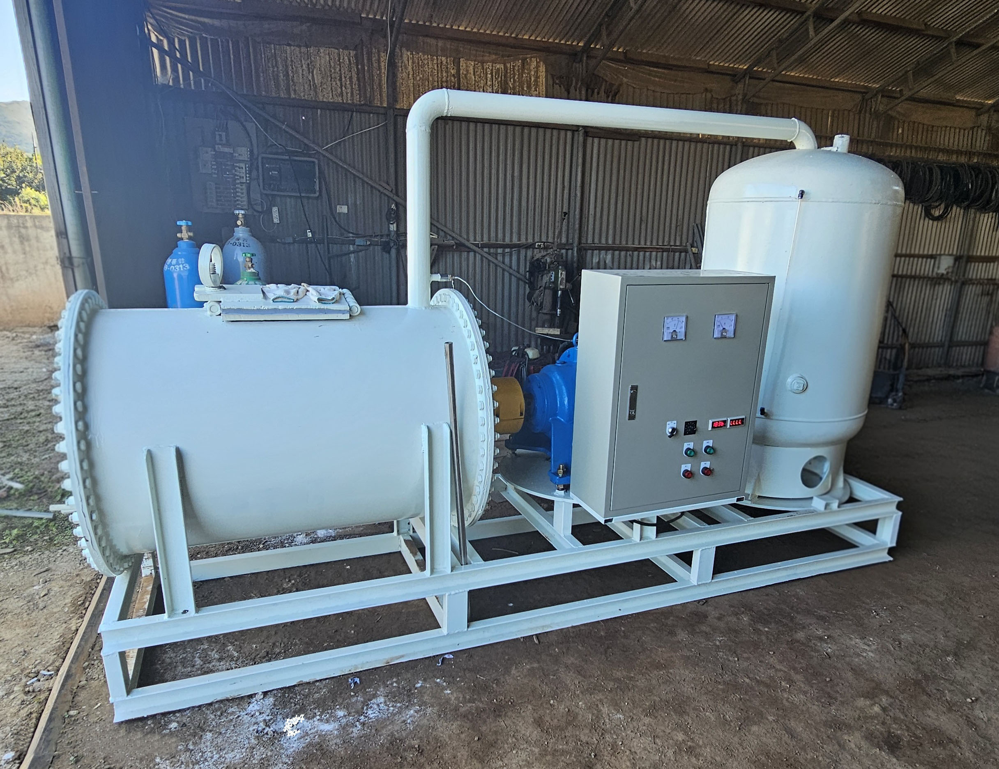

생석회·소석회의 화학반응을 이용해 축분, 음식물류폐기물, 파래(해조류), 감귤피 등 유기성 부산물을 고온·고알칼리 조건에서 안전하게 처리합니다. 기존의 긴 부숙 과정을 화학반응으로 대체하여 더 빠르고 품질이 균일한 비료를 생산합니다.

유기성 부산물과 석회의 화학반응으로 생산되는 친환경 비료. 토양 산도 개선과 작물 생육에 필요한 칼슘·미네랄을 동시에 공급합니다.
산성화된 토양의 pH를 중화시켜 작물이 자라기 좋은 환경을 조성합니다.
작물의 세포벽 형성과 생육에 필수적인 칼슘과 미네랄을 공급합니다.
폐기물을 재자원화한 순환형 비료로 환경 부담을 크게 낮춥니다.
원료 처리부터 최종 제품까지 성분분석·품질검사를 실시합니다.